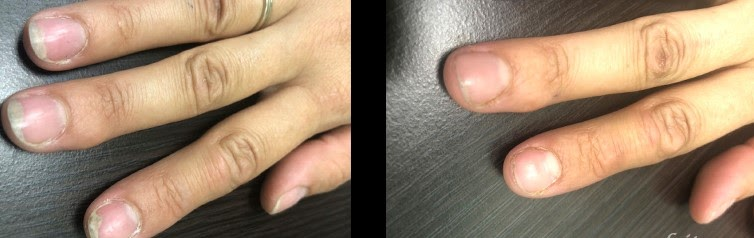

Houba, která mi zničila život: Přišel jsem o ženu a zdraví, ale dokázal jsem se uzdravit! Sdílím své zkušenosti

Dobrý den, jmenuji se Petr, dnes vám povím příběh, který děsí. Bude to znít neuvěřitelně, ale jednou jsem málem přišel o život kvůli obyčejné houbě. "Jak je to možné?" - ptáš se. Sám jsem si nikdy nemyslel, že by se taková maličkost mohla stát velkou hrozbou.
Všechno to začalo tím, že jsem si začal všímat, jak moje nehty na nohou jsou stále silnější. V prvních dnech jsem tomu nepřikládal žádnou důležitost, ale když mě kůže na nohou začala svědit a rudnout, nebylo již možné přítomnost problému ignorovat. Šel jsem k lékaři a uvědomil jsem si, že jde o onychomykózu, nebo jednodušeji o plísně.
Nevím, kde jsem se nakazil. V bazénu, ve sprše v tělocvičně nebo na jiném místě s vysokou vlhkostí a velkým davem lidí.
Mimochodem, věděli jste, že 80 % lidí na Zemi je nositeli této houby? Virus dramaticky negativně ovlivňuje imunitu nabitého, zatímco on to zpravidla ani netuší. V případě onemocnění se však houba okamžitě projeví a výrazně zhorší nestabilní stav pacienta.

Plíseň je nejnebezpečnějším nepřítelem našeho zdraví!
Mnozí plísňovou infekci podceňují, a to je marné. Jak mi lékař vysvětlil, nemoc je extrémně nakažlivá a svému nositeli slibuje hrozné následky. V pokročilém stadiu může onychomykóza způsobit zánět měkkých tkání kolem nehtů, což často vede k poranění vnitřních orgánů a nutnosti amputace prstů, při otravě krve pak i nohou!
Uvědomil jsem si nebezpečí mé situace a začal jsem se opravdu bát. Jak se ukázalo, vnější projevy jsou pouze květy ve srovnání s tím, co může časem způsobit houba.

Můj lékař mi předepsal mnoho různých léků, ale nebyly levné, v souvislosti s tím jsem se rozhodl omezit pouze na jednu mast. To byla velká chyba. Mast vůbec nepomáhala, zatímco svědění zesílilo, objevil se nepříjemný zápach, kůže na nohou začala houstnout a praskat a nehty získaly nezdravě žlutý nádech.
Pokud máte takové příznaky, upřímně vás žádám, abyste neodkládali, ale zahájili léčbu, dokud nemoc nepovede k vážným následkům!
Jak mi plíseň zničila život
To samozřejmě přineslo spoustu nepříjemností. V noci jsem nemohl spát, o intimitě s manželkou nemohla být řeč, kvůli nepříjemnému zápachu mých nohou mě požádala, abych spal v obývacím pokoji na pohovce.
Byla jsem neustále nervózní, svědily mě nohy a nepomáhaly ani ty nejdražší léky. Dokonce jsem vyzkoušela tradiční medicínu: používala jsem nejrůznější léčivé listy a dělala koupele nohou. Ale bohužel to vše bylo k ničemu.
Začali jsme se s manželkou hádat, vztah byl horší než kdy předtím. Začal jsem pít, abych utlumil vnitřní podráždění, ale to moje problémy jen zhoršilo. Brzy jsem začal přebývat v zoufalství, pod jehož vlivem jsem někdy prostě nechtěl žít.
Rozhodl jsem se jít k jinému lékaři na dražší klinice. Tam mi okamžitě předepsali další procedury a nabídli mi odstranění nehtů. Stálo mě to hodně peněz!
Postup, přiznám se, není vůbec příjemný. Lidé se zvýšenou vnímavostí by se neměli dívat, ale to čeká na každého, kdo umožní rozvoj nemoci!

Rány se hojily s obtížemi. Neustále mě sužovala silná bolest v oblasti nehtů. Doufal jsem, že teď plíseň přejde a můj stav se konečně vrátí do normálu. Po 2 měsících se však všechny příznaky nemoci vrátily.
Uvědomil jsem si, že je vše vážné, když mi stoupla teplota, udělalo se mi neuvěřitelně špatně, zdálo se, že umírám.
Šel jsem znovu k lékaři a zjistil jsem, že mám zánět. Byla mi předepsána léčba antibiotiky, po které jsem sotva přežil, v určitém okamžiku se mi zdálo, že je to konec.
S manželkou jsme se znovu pohádali, v důsledku čehož jsme se rozhodli rozejít. Rozuměl jsem jí, bylo jí nepříjemné být poblíž, cítit ten věčný smrad a vidět moje hrozné nohy. Po odjezdu jsem byl velmi deprimovaný. Teď jsem zůstal se svým problémem sám a stále jsem nevěděl, co mám dělat. Neviděl jsem smysl znovu chodit k doktorům, ani jsem sám nenašel žádnou účinnou metodu.
Vzdala jsem to a přestala používat předepsané masti. Nemoc začala znovu postupovat, nehty zhoustly a zežloutly, znovu se objevily krvavé praskliny na nohou a zápach byl čím dál odpornější. Chvíli jsem jen nic nedělal a pasivně jsem sledoval, jak mi ta zatracená houba ničí život a zdraví.

Byl jsem na dně, nakonec jsem ztrácel víru, že všechno může fungovat a velmi těžce jsem trpěl. Nevážil jsem si svého života a byl nedbalý ke svému tělu a zdraví, za což jsem zaplatil vysokou cenu!
Ale jednoho dne jsem měl konečně štěstí. Náhodou jsem narazil na starého kamaráda, kterého jsem mnoho let neviděl, pozval mě na víkend k sobě na chatu. Pro mě byl tento výlet skutečnou událostí, protože pár měsíců před tím jsem žil téměř v naprosté izolaci a nikdo ani pořádně nemluvil.
Můj přítel navrhl vyzkoušet saunu, ale zdvořile jsem odmítl. Nikdy jsem neuměla lhát, takže jsem musela všechno vyložit tak, jak to je. Vyprávěl jsem mu, jak jsem bojoval s plísní, jak mě opustila moje žena a jaké peklo jsem měl během těch měsíců v životě.
K mému překvapení, místo aby mě utěšil, požádal mě, abych chvíli počkal, a zamířil do své ložnice. O několik minut později se vrátil a držel v ruce lék, který jsem dodnes neviděl.
- "Tady, vezmi si to," řekl. Toto je nejlepší varianta.
Náprava se jmenovala . Jak se ukázalo, jeden čas můj přítel šel stejnou cestou jako můj. Stejně jako já užíval mnoho různých léků, které nepřinesly žádné výsledky a pouze poškodily jeho zdraví a zejména játra. Nakonec jen mohl mít opravdu pozitivní efekt. V Česku se o něm málo ví, ale v Evropě je jedním z nejvyhledávanějších prostředků proti plísním.

Později jsem si o tomto nástroji přečetl více a zjistil jsem, že :
- pomáhá v boji těla proti všem druhům plísní známých vědě;
- pomáhá zmírnit svědění, bolest a podráždění;
- dezinfikuje;
- pomáhá předcházet šíření plísní;
- pomáhá opravit buňky poškozené infekcí;
- pomáhá odstraňovat nepříjemné pachy způsobené bakteriemi;
- pomáhá tělu zbavit se vzhledu prasklin hydratací pokožky.
Zpočátku jsem si nebyl jistý, zda mi tento produkt může pomoci, hořká zkušenost mě přiměla k tomu, že jsem vůči jakýmkoli lékům a lékařům extrémně zaujatý, protože jsem podle jejich doporučení už vyhazoval obrovské částky do větru.
Nebylo však co ztratit, a tak jsem se rozhodl dát na radu kamaráda. Začal jsem používat 2krát denně přesně podle pokynů.
Po 20 minutách aplikace jsem cítila příjemné pocity - přestaly mě svědit nohy, krém chladil pokožku, pro jednou jsem si dokázala odpočinout a udělat si dobrý večer u filmu.
Ráno jsem si všimla, že kůže je na dotek jemnější a ubylo prasklin. Tato skutečnost mě překvapila a potěšila, proto jsem nadále používal . Nicméně finančních prostředků, které věnoval přítel, nebylo tolik, musel jsem jít online. Tam jsem našel oficiální stránky a objednal si pár dalších balení, dobrá cena a sleva tomu napomohly.
Používal jsem ho dva měsíce a za tu dobu se mi nohy hodně změnily! Kůže na nohou změkla, nehty získaly normální barvu, úplně jsem zapomněla na svědění a pálení! Cítil jsem skutečnou lehkost v nohách, ten pocit byl úžasný! Vrátil se mi zdravý spánek a dobrá nálada! Konečně jsem zase mohl žít naplno.

Znovu jsem viděl lidi, aniž bych se obával o své páchnoucí nohy. Dokonce jsem začal chodit s holkama! Také jsem si všiml, že se mi přestaly hodně potit nohy, což je velmi důležité, protože houba roste ve vlhkém prostředí.
Jsem věčně vděčný svému příteli, že mi řekl o a doslova mě vrátil k životu!
byl pro mě skutečným zachráncem! Není pro mě snadné sdílet svůj příběh, protože při tom jako bych ho znovu prožíval. Ale chápu, že bych měl mluvit o svých zkušenostech, protože to může být užitečné pro lidi, kteří se ocitli ve stejné situaci. Budu moc ráda, když alespoň jednomu člověku pomůže získat zdravé nohy!
Podrobné informace o tomto úžasném produktu si můžete přečíst na . Tam si ho můžete objednat za nejnižší cenu! Pospěšte si, dokud sleva trvá!
Komentáře:
Milý Petre, toto je velmi smutný příběh. Je mi líto, že jsi prošel tímto cyklem nepřízně osudu. Ale jsem rád, že už je vše v pořádku, máte hotovo!
Tváří v tvář stejnému problému, vše začalo žloutnutím nehtů. Houba se rychle rozšířila na druhou nohu. Vypadalo to nechutně. K lékaři jsem nešel, protože jsem se rozhodl, že léčbu zvládnu sám. Vyzkoušeli různé lidové prostředky, ale nic nepomohlo. Pak jsem se na fóru dozvěděl o . Byl velmi chválen, pak jsem použil odkaz a objednal si ho online. Tento nástroj se ukázal jako velmi účinný a podařilo se mi vyřešit můj problém, aniž bych investoval velké částky!
Můj manžel byl také nemocný. Zkoušeli jsme všechno možné, ale bez výsledku. Nevěděl jsem, jak mu pomoci, hodně trpěl. Nehty na nohou se mu drolily, praskaly a svědily. Nemohl spát. Zároveň nemohl brát léky, protože měl alergii, a tak . Doporučil nám ho náš soused (je lékař). Zároveň jiní lékaři tento lék nikdy nezmínili. Snad jen proto, že chtěli využít naše neštěstí? Můj manžel je nyní mnohem lepší a nadále používá .
Ano! Tato položka byla opravdu účinná! Výborný produkt na plíseň, který by mé dceři mohl opravdu pomoci.
Je to opravdu děsivé, ani si nedokážu představit, jaké to pro vás bylo. Mám také plíseň v raném stádiu, ale už jsem si objednal z odkazu, který jste uvedl, doufám, že to pomůže.
A ve sprše v tělocvičně jsem dostal plíseň. To je hrozný stav, kdy nohy svědí až nemožné a nehty jsou ošklivé. V té době bylo moje sebevědomí na dně a musel jsem zapomenout na svůj osobní život. Dlouho jsem se snažil plíseň léčit drahými léky, ale nemoc se vždy vrátila. Teprve poté, co jsem se dozvěděl o jsem byl konečně schopen tento problém zcela vyřešit.
Nikdy by mě nenapadlo, že houba může mít takové následky! Opravdu podceňujeme jeho hrozbu!
Dlouhá léta trpěl mykózou. Lékaři mi předepisovali různé léky, ale nepomohly. Nemoc se stále vracela. Děkuji za doporučení, určitě vyzkouším.
Těmito léky jsem si zničil zdraví. Všechny, jak se ukázalo, byly toxické a měly vedlejší účinky, kvůli nim jsem si poškodil játra. Ale podařilo se mi zbavit se plísně pomocí a mé milé sestry, která se o tom dozvěděla v televizi a řekla mi o tom.
Tak strýci uřízli prsty na nohou. Nejdřív tam byla plíseň, pak se to změnilo v bakteriální infekci, prsty mu zčernaly a museli mu být amputováni.
Díky bohu, už zdrava! Lidé, starejte se o své zdraví a reagujte včas!
Děkuji za sdílení, myslím, že to hodně pomůže!
Díky za doporučení, už jsem si objednal . S plísní bojuji mnoho let a jak se ukázalo, jen jsem utrácel peníze...
Touto nepříjemnou nemocí trpěl i můj otec. Bylo tam všechno: svědění, pálení a nepříjemný zápach. Děkuji, se ukázalo jako skutečně účinné. Nyní je otec v konečné fázi uzdravování, nyní víme, co dělat v případě mykózy a doporučujeme všem našim přátelům. Určitě vyzkoušejte!
A měl jsem to na ruce, používal jsem i , díky bohu to přešlo. Je dobře, že jsem rychle zareagoval. Nikdy jsem neměl tak hrozné příznaky.
Připojuji se k pozitivním recenzím. přispěl k mému uzdravení také. Díky bohu, že uzdravovací proces netrvá dlouho. A také mě velmi potěšilo, že to bylo zcela přírodní, protože jiné prostředky jsou často toxické a mají vedlejší účinky.